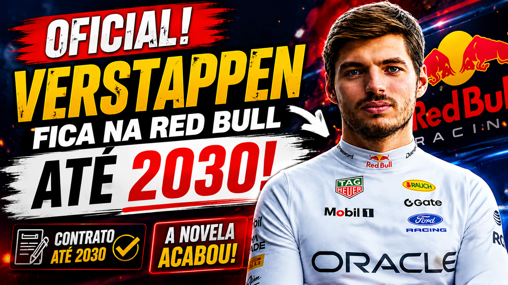

URGENTE: Verstappen renova com a Red Bull até 2030 e encerra novela na Fórmula 1

Max Verstappen fica na Red Bull até 2030. A confirmação veio nesta quinta-feira (20), antes do GP da Holanda, e coloca fim a uma das maiores especulações da Fórmula 1 nos últimos meses. O tetracampeão mundial decidiu estender seu vínculo com a equipe austríaca justamente em um momento de forte pressão por resultados e após ser associado a possíveis mudanças para Mercedes ou McLaren.
A decisão, porém, vai muito além de uma simples renovação de contrato. Verstappen tinha vínculo com a Red Bull até 2028, mas as dúvidas sobre seu futuro aumentaram durante 2026, principalmente por causa da falta de competitividade da equipe e das mudanças introduzidas pelo novo regulamento da Fórmula 1.
Agora, o piloto escolheu permanecer até o final da temporada de 2030.
Gostou do conteúdo? Confira nossa loja!

Verstappen fica na Red Bull: por que essa renovação surpreende?
A renovação de Verstappen com a Red Bull chama atenção principalmente pelo momento em que acontece.
A equipe caiu para a quarta posição na hierarquia de desempenho em 2026 e ainda não venceu uma corrida nesta temporada. Para um piloto que conquistou quatro títulos mundiais com a equipe, o cenário poderia naturalmente abrir espaço para uma mudança de ares.
Mercedes e McLaren foram apontadas durante meses como possíveis destinos para Verstappen.
O interesse da Mercedes ganhou força ao longo da especulação sobre o futuro do holandês, enquanto a McLaren também apareceu como uma alternativa especialmente forte no mercado de pilotos.
Mesmo assim, Verstappen decidiu continuar onde construiu a maior parte de sua carreira na Fórmula 1.
A relação entre Verstappen e Red Bull pesou
Em suas primeiras declarações após a renovação, Verstappen explicou que não sentia necessidade de trocar de equipe e destacou a relação construída com a Red Bull.
O piloto descreveu a equipe como uma espécie de família e afirmou que a continuidade da parceria é algo especial para ele.
Esse aspecto ajuda a explicar por que o holandês não tratou a decisão apenas como uma questão de performance imediata.
Para Verstappen, existe confiança nas pessoas, no ambiente da equipe e na capacidade da Red Bull de reagir.
E esse talvez seja o maior componente estratégico da renovação.
Verstappen chegou a considerar deixar a Fórmula 1
Um dos detalhes mais surpreendentes revelados após o anúncio foi que Verstappen chegou a pensar seriamente sobre seu próprio futuro na categoria.
O piloto admitiu que esteve próximo de considerar uma saída da Fórmula 1 antes de decidir continuar. A questão não era simplesmente escolher entre Red Bull, Mercedes ou McLaren: em determinado momento, a possibilidade de parar de correr também esteve em discussão.
Isso muda a dimensão da notícia.
A renovação até 2030 não representa apenas a escolha de uma equipe. Representa também uma decisão de Verstappen de continuar sua carreira na Fórmula 1 durante a nova era técnica da categoria.
O detalhe que tornou o anúncio ainda mais curioso
A Red Bull ainda encontrou uma maneira bastante criativa de brincar com toda a especulação.
Antes do anúncio oficial, a equipe publicou uma situação envolvendo Laurent Mekies e uma suposta mensagem informando que Verstappen havia deixado a Red Bull.
O detalhe estava em uma única palavra: “resigns”.
A brincadeira explorava a diferença entre “resigns”, que indica renúncia ou saída, e “re-signs”, usado no sentido de assinar novamente.
No fim, a mensagem que parecia anunciar uma saída era justamente o contrário: Verstappen estava renovando seu contrato.
Pouco depois, a Red Bull confirmou oficialmente o novo vínculo até 2030.
O que a renovação significa para a Fórmula 1?
A permanência de Verstappen também provoca um efeito importante no mercado de pilotos.
Com o tetracampeão fora do mercado, as principais equipes ganham maior estabilidade para os próximos anos. A especulação que envolvia Red Bull, Mercedes e McLaren perde força, e a atenção do mercado passa a se concentrar em outros nomes e possíveis mudanças no grid.
Mas existe uma consequência ainda mais importante.
A pressão agora está sobre a Red Bull
Verstappen já fez sua escolha.
Agora é a Red Bull que precisa responder.
O piloto assinou até 2030, mas isso não significa que aceitará permanecer eternamente em uma equipe incapaz de disputar vitórias e campeonatos.
A própria Red Bull reconheceu que sua parceria com Verstappen precisa continuar evoluindo e que o objetivo permanece sendo retornar ao topo da Fórmula 1.
Esse é o verdadeiro desafio da renovação.
Verstappen fez a escolha certa?
É aqui que a notícia deixa de ser apenas uma confirmação de contrato e passa a gerar uma discussão interessante.
Do ponto de vista emocional e de relacionamento, continuar na Red Bull faz sentido.
Foi com a equipe que Verstappen conquistou suas maiores vitórias e os quatro campeonatos mundiais. Existe confiança construída durante anos e uma estrutura que conhece profundamente o piloto.
Mas, do ponto de vista esportivo, a decisão envolve um risco considerável.
A Fórmula 1 de 2026 mostrou que a hierarquia pode mudar rapidamente. A Red Bull precisa transformar sua nova estrutura técnica e sua parceria com a Ford em um projeto capaz de enfrentar Mercedes, McLaren e Ferrari durante os próximos anos.
Se conseguir, Verstappen pode ter tomado uma decisão extremamente inteligente.
Se não conseguir, a renovação até 2030 poderá ser lembrada como uma aposta arriscada demais.
Uma nova era começa para Verstappen e Red Bull
O anúncio encerra a novela sobre o futuro de Max Verstappen, mas abre uma pergunta ainda maior:
a Red Bull será capaz de entregar novamente um carro digno de um tetracampeão mundial?
Verstappen decidiu confiar na equipe.
Agora, a equipe precisa justificar essa confiança.
A permanência do holandês até 2030 garante uma das principais estrelas da Fórmula 1 no grid durante a próxima fase da categoria e transforma a Red Bull novamente em um dos projetos mais importantes para acompanhar nos próximos anos.
E tudo começa neste fim de semana, justamente em Zandvoort, na corrida de casa de Verstappen.
A novela acabou.
Agora começa o verdadeiro teste.
Leia também no Ponto de Frenagem: